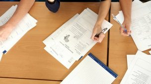

29 January 2015 Last updated at 16:37 GMT
School tables branded a 'nonsense'
Government school league tables are branded a "nonsense", after numerous changes to the way grades are recognised left more schools failing.
'Period of transition'
School performance data explained
Secondary league tables: Best GCSE results
Secondary league tables 2014: Best A-level results